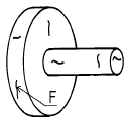
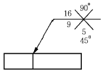

자기비파괴검사기능사 (2002-10-06 기출문제)
1과목: 자기탐상시험법
1. 형광 침투탐상시험시 적절한 세척 여부를 확인하는 방법은?
- 부품을 자외선등 아래에서 확인한다.
- 부품을 태양광선 아래에서 확인한다.
- 부품을 백열전등 아래에서 확인한다.
- 부품을 열적외선으로 확인한다.
(정답률: 50%)

2. 초음파탐상시험시 일반적인 조건에서 직접 접촉법으로 검사할 때 진동자에 플라스틱 쐐기를 붙이지 않는 경우는?
- 수직 접촉법
- 경사각 접촉법
- 표면파 접촉법
- 판파 접촉법
(정답률: 알수없음)
3. 자분탐상시험시 시험 코일에 흐르는 전류의 성질에 관한 설명으로 틀린 것은?
- 시험코일의 전류는 코일의 저항이 작을수록 많이 흐르게 된다.
- 시험코일의 전류는 오직 코일 자체의 전도도에만 관계된다.
- 시험코일의 전류는 자장을 만든다.
- 코일 주위에 발생하는 자장의 영향을 받는다.
(정답률: 59%)
4. 자분탐상시험의 경우, 동(銅)선에 전류를 통하면 어떻게 되는가?
- 동선에 평행되게 자장을 만든다.
- 동선을 자화한다.
- 동선에 자극을 만든다.
- 동선 주위에 동선과 직각으로 자장을 만든다.
(정답률: 70%)
5. 다음 중 시험품의 내부결함 검출에 가장 용이한 비파괴검사법은?
- 방사선투과검사
- 자분탐상검사
- 침투탐상검사
- 와전류탐상검사
(정답률: 95%)
6. 길이가 10인치, 최대 지름이 2인치인 시험품에 코일을 5회 감아 코일법으로 자분탐상검사를 수행하는 경우 적합한 전류 값은 ?(단, L/D의 값이 4이상인 경우이다.)
- 5000A
- 2500A
- 1250A
- 1000A
(정답률: 42%)
7. 다음 중 자분탐상검사에서 시험방법 적용시 가장 먼저 고려해야 할 사항은?
- 제품의 용도
- 예상 결함의 종류
- 잔류자기의 양
- 검사품의 표면조건
(정답률: 50%)
8. prod법으로 시험할 때 최대효과를 거두기 위한 prod 사이의 거리는?
- 1∼5인치
- 6∼8인치
- 9∼12인치
- 12∼16인치
(정답률: 77%)
9. 다음 물질중 자분탐상시험으로 제일 양호하게 시험할 수 있는 것은?
- 마그네슘
- 황동
- 탄소강
- 알루미늄
(정답률: 75%)
10. 그림에서 자분지시 F를 검출하기에 가장 적합한 검사 방법은?

- 접촉대(head stock)를 이용한 원형자화
- 중심도체를 이용한 원형자화
- 코일을 이용한 선형자화
- 프로드(prod)를 이용한 원형자화
(정답률: 42%)
11. 부품에 대하여 자분탐상검사시 다음 중 고려되어야할 사항으로 가장 중요한 것은?
- 자속밀도
- 전류의 밀도
- 자장의 방향
- 부품의 크기
(정답률: 50%)
12. 자분탐상시험으로 표면결함 검사시 교류가 효과적이다. 이유로 합당한 효과는?
- 전류효과
- 담금효과
- 표피효과
- 질량효과
(정답률: 73%)
13. 시험체에 관통된 결함 확인으로 쉽게 응용할 수 있는 비파괴검사법에 대하여 설명한 것으로 틀린 것은?
- 시험체 전면에 침투제를 적용하고 반대면에는 현상제를 적용한다.
- 타진법을 응용해서 결함 부분을 두드려 본다.
- 시험체 내부를 밀봉하고 가압하여 시험체 외부에 비눗물을 적용한다.
- 진공상자를 이용하여 흡입된 압력차를 일아 본다.
(정답률: 50%)
14. 부품을 선형자화시킬 때 자계의 세기와 관련한 설명으로 옳지 않은 것은?
- 자계의 세기는 전류에 비례한다.
- 자계의 세기는 시험체의 두께에 반비례한다.
- 자화 전류는 부품의 길이에 비례한다.
- 자화 전류는 권선수에 반비례한다.
(정답률: 46%)
15. 원형자화법에 의하여 자화된 부품을 탈자할 때 첫단계로 무엇을 해야 하는가?
- 직접 탈자해야 한다.
- 부품내에 전류자장을 형성해야 한다.
- 부품내에 종축자장을 형성해야 한다.
- 부품내에 회전자장을 형성해야 한다.
(정답률: 34%)
16. 다음 중 자분탐상시험의 3가지 기본탐상 순서가 맞게 나열된 것은?
- 관찰 → 자분적용 → 탈자
- 탈자 → 자분적용 → 관찰
- 자화조작 → 자분적용 → 관찰
- 자화조작 → 전처리 → 관찰
(정답률: 57%)
17. 자분모양의 관찰에 대한 설명이다. 틀린 것은?
- 우선 의사지시모양인지 결함지시모양인지 구별해야 한다.
- 관찰은 가급적 관찰면 정면에서 관찰한다.
- 관찰하는 광선(자외선 및 가시광선)은 관찰면에 대해 반사광이 있는 위치와 각도에서 시행한다.
- 결함깊이를 측정하고자할 때는 전기저항법 등의 원리를 응용한 다른 방법을 택한다.
(정답률: 58%)
18. 다음 중 건식자분의 특성을 올바르게 서술한 것은?
- 대량부품 검사에 좋다.
- 미세결함 검출에 좋다.
- 표면결함 탐지에 좋다.
- 과잉의 자분은 공기를 불어 제거할 수 있다.
(정답률: 56%)
19. 자분탐상시험시 자장계(Field Indicator)의 주 역할은?
- 자계의 방향을 탐지하는데 사용한다.
- 포화 자계를 지시하는데 사용한다.
- 잔류자기의 존재 여부를 확인하는데 사용한다.
- 소요 암페아를 측정하는데 사용한다.
(정답률: 50%)
20. 프로드법으로 탐상할 때 시험체의 두께가 3/4인치보다 작을 경우 자화전류치를 프로드간격 1인치당 몇 Ampere로 하면 가장 적당한가?
- 50∼80A
- 80∼90A
- 90∼110A
- 110∼125A
(정답률: 15%)
2과목: 자기탐상관련규격
21. 코일법의 특징 설명으로 맞는 것은?(단, L : 시험체길이, D : 직경)
- 축방향의 결함검출에 좋다.
- 코일의 전류값과 암페어.턴(A.T)은 반비례한다.
- L/D가 작을수록 암페아.턴(A.T) 값을 감소시킨다.
- L/D가 2이하인 것은 적용하지 않는 것이 좋다.
(정답률: 34%)
22. 헬륨질량분석법, 압력변화시험 등을 대표적인 검사법으로 택하고 있는 비파괴검사법은?
- 침투탐상검사
- 누설검사
- 음향방출시험
- 육안검사
(정답률: 62%)
23. 반자계가 발생하지 않는 자화방법만으로 짝지어진 것은?
- 직각통전법, 전류관통법, 코일법
- 자속관통법, 코일법, 프로드법
- 전류관통법, 축통전법, 극간법
- 자속관통법, 축통전법, 코일법
(정답률: 41%)
24. 통전법에서 시험체에 아크 스트라이크(arc strikes)와 같은 손상을 방지하고 전기적 접촉을 좋게 하기 위하여 시험체와 전극 사이에 끼워 사용되는 물질을 무엇이라 하는 가?
- 도체 헤드(contact head)
- 탐상용 쐐기(search wedge)
- 도체 패드(contact pad)
- 알루미늄 편조(aluminium braid)
(정답률: 67%)
25. 자분탐상시험에서 불연속 검출능에 큰 영향을 미치는 검사액이 갖추어야 할 성질이 아닌 것은?
- 휘발성이 없고 인화점이 높아야 한다.
- 시험면에 대한 적심성이 좋아야 한다.
- 검사액의 현탁성은 장시간 유지되어야 한다.
- 검사액은 형광성이어야만 한다.
(정답률: 54%)
26. KS D 0213에서 극성은 불변이나 주기적으로 크기가 변화하는 자화전류를 나타내는 용어는?
- 자화전류
- 정류
- 충격전류
- 택류(맥류)
(정답률: 50%)
27. KS D 0213에 의한 자분탐상시 건식법에서 자분 살포와 관련된 내용 중 옳지 않은 것은?
- 시험면이 충분히 건조되어 있는 것을 확인하고 젖어 있는 경우에는 시험해서는 안된다.
- 충분히 건조되어 있지않은 자분을 뿌리거나 살포해서는 안된다.
- 가볍게 시험면에 진동을 가하여 자분 모양의 형성을 쉽게 할 수도 있다.
- 잉여 자분은 조용한 공기흐름으로 제거해서는 안된다.
(정답률: 48%)
28. KS D 0213에서 시험방법에 요구되지 않는 조작 기능은?
- 탈자
- 자분 적용
- 자화
- 등급분류
(정답률: 65%)
29. KS D 0213에서 잔류법에 일반적으로 적용하는 통전시간은 얼마인가?
- 1/10 ‾ 1/20초
- 1/4 ‾ 1초
- 1 ‾ 3초
- 5 ‾ 10초
(정답률: 84%)
30. KS D 0213에서 규정하고 있는 시험편의 표준 중 가장 작은 치수로 사용이 가능한 것은?
- A1-7/50(원형)의 인공흠의 깊이
- C형 표준시험편의 인공흠의 깊이
- B형 시험편의 인공흠의 직경
- C형 시험편 접착에 사용되는 양면 점착테이프의 최대 두께
(정답률: 50%)
31. KS D 0213에 따라 시험체 표면의 유효자장의 강도를 조사하는 과정에서 다음 중 가장 낮은 유효자계에서 자분 모양이 나타날 것으로 예상되는 것은?
- A1-7/50(원형)
- A1-7/50(직선형)
- A1-15/100(직선형)
- A1-30/100(직선형)
(정답률: 18%)
32. KS D 0213의 자분모양에 의해 나타난 분류에 해당되지 않는 것은?
- 표면하의 자분모양
- 균열에 의한 자분모양
- 선상의 자분모양
- 원형상의 자분모양
(정답률: 29%)
33. KS 규격에 의해 자분탐상시험후 탈자를 해야할 경우로 맞는 것은?
- 계속하여 하는 시험의 자화가 전회의 자화에 의해 악영향을 받을 우려가 있을 때
- 시험체의 잔류자기가 이후의 기계가공에 악 영향을 미칠 우려가 없을 때
- 시험체의 잔류자기가 계측장치 등에 악 영향을 미칠 우려가 없을 때
- 시험체가 마찰부분에 사용되는 것으로 철분 등을 흡인하여 마모의 증가 우려가 없을 때
(정답률: 62%)
34. KS 규격에 의해 여러 개의 시험체를 동시에 자분탐상시험 할 때 특히 고려하여야 할 사항이 아닌 것은?
- 시험체의 배치
- 자화방법
- 제조방법
- 자화전류
(정답률: 77%)
35. KS D 0213에 의하면 압력용기를 내압시험한 후에는 프로드법을 적용하여 시험하지 못하도록 하고 있다. 이유는?
- 탈자가 불가능하므로
- 전류의 방향이 부적당하므로
- 비교적 미세한 결함탐지에 부적합하므로
- 전극의 아크로 인한 소손방지를 위하여
(정답률: 47%)
36. KS 규격에 의해 자분탐상시험을 할 때 콘크라스트(contrast)가 좋은 자분을 선택하는 이유는?
- 자분의 이동성 용이
- 자분의 관찰성 용이
- 시험품의 통전성 용이
- 시험품의 이동성 용이
(정답률: 74%)
37. KS D 0213에 의한 의사모양으로써 큰 전류가 흐르고 있는 자화케이블 등이 시험면에 접촉하면 그 부위가 국부적으로 자화되기 때문에 생기는 굵고 흐린 자분모양으로서 케이블을 따라 나타나는 의사모양을 무엇이라 하는가?
- 전극지시
- 자극지시
- 자기펜 자국
- 전류지시
(정답률: 10%)
38. KS D 0213에서 자기펜 자국을 확인하기 위하여 어떤 방법을 권고하고 있는가?
- 탈자후 재시험한다.
- 잔류법으로 재시험한다.
- 부품 표면을 현미경으로 시험한다.
- 탈자후 그냥 자분을 다시 뿌려본다.
(정답률: 60%)
39. KS D 0213에서 C형 표준시험편의 판 두께(μm)를 규정하고 있다. 두께로 맞는 것은?
- 10
- 20
- 30
- 50
(정답률: 59%)
40. KS D 0213에 따라 시험기록을 작성할 때 기입되는 내용 설명이 잘못된 것은?
- 시험체는 품명, 치수, 열처리상태, 표면상태를 기재
- 자분의 모양은 제조자명, 형번, 입도, 형광.비형광의 구별 및 색을 기재
- 시험결과는 결함의 등급, 자분모양의 유무 등으로 구분하여 기재
- 자화전류가 맥류인 경우 맥류ㆍ단상반파정류 방식 등을 부기
(정답률: 37%)
3과목: 금속재료일반 및 용접일반
41. KS D 0213에 따른 자분의 자성 측정방법에 해당되지 않는 것은?
- 자기천칭을 사용하는 방법
- 자기히스테리곡선을 구하는 방법
- 솔레노이드 코일을 사용하는 방법
- 자기력선의 갯수를 측정하는 방법
(정답률: 24%)
42. 소성가공한 금속재료를 고온으로 가열할 때 일어나는 현상이 아닌 것은?
- 내부 응력제거
- 재결정
- 경도의 증가
- 결정입자의 성장
(정답률: 47%)
43. 고온에서 Ni을 가장 쉽게 산화시킬 수 있는 가스는?
- CO2 가스
- H2 가스
- CO 가스
- SO2 가스
(정답률: 9%)
44. 동일한 조건에서 열전도율이 가장 큰 것은?
- Ag
- Au
- Cu
- Mg
(정답률: 53%)
45. 순철의 동소변태에 해당되는 온도는?
- 약 210℃
- 약 700℃
- 약 912℃
- 약 1600℃
(정답률: 44%)
46. 상온에서 순철(α 철)의 결정 격자는?
- 면심입방격자
- 조밀육방격자
- 체심입방격자
- 정방격자
(정답률: 42%)
47. γ철을 맞게 표현한 것은?
- 페라이트
- 시멘타이트
- 오스테나이트
- 솔바이트
(정답률: 54%)
48. 철-탄소계의 평형 상태도에서 공정점의 탄소량(%)은?
- 0.2
- 0.8
- 1.5
- 4.3
(정답률: 40%)
49. 흑연화를 목적으로 백선을 열처리하는 것은?
- 흑심가단주철
- 칠드주철
- 보통주철
- 합금주철
(정답률: 27%)
50. 주철에서 흑연구상화처리시 첨가하는 금속은?
- Mg, Ca
- Pb, Sn
- Cu, Ag
- Zn, Mn
(정답률: 56%)
51. 다음의 표면경화법 중 금속 시멘테이션(cementation)법이 아닌 것은?
- 크로마이징(chromizing)
- 질화법(nitriding)
- 칼로라이징(calorizing)
- 보로나이징(boronizing)
(정답률: 64%)
52. 공업용 재료에 사용되는 재료 중에서 비중과 강도비가 크고 내식성 및 내열성도 좋아 항공기, 로켓 재료로 쓰이는 합금으로 비중이 약 4.5인 금속은?
- Ti
- Mg
- Aℓ
- Fe
(정답률: 50%)
53. 은백색으로 전연성이 좋아 박(foil)이나 가는 선으로 사용되는 금속으로 비중이 약 10.5 인 금속은?
- 금
- 은
- 철
- 황
(정답률: 62%)
54. 그림과 같은 용접기호 해독으로 올바른 것은?

- 화살표쪽 홈의 깊이는 16mm, 45° 홈인 X형 용접이다.
- 화살표 반대쪽의 홈의 깊이는 9mm, 90° 홈인 X형 용접이다.
- 화살표쪽의 홈은 45° , 홈의 깊이는 5mm인 X형 용접이다.
- 화살표쪽의 홈은 45° , 루트 간격 5mm 인 X형 용접이다.
(정답률: 16%)
55. 점용접 조건의 3요소가 아닌 것은?
- 전류의 세기
- 통전시간
- 너켓(nugget)
- 가압력
(정답률: 58%)
56. 15 ℃ 15기압하에서 아세톤 30ℓ 가 들어있는 아세틸렌 용기에 용해된 최대 아세틸렌의 양은?
- 30ℓ
- 450ℓ
- 6750ℓ
- 11250ℓ
(정답률: 55%)
57. 다음 중 인터넷을 사용할 때 영문으로 표현된 도메인이름을 컴퓨터가 가지고 있는 IP주소로 변환시켜 주는 것은?
- DTS
- DNT
- DNS
- DNP
(정답률: 48%)
58. 컴퓨터의 하드웨어 중 임시 데이터 저장 능력을 가진 휘발성 기억 장치는?
- RAM
- ROM
- HDD
- FDD
(정답률: 57%)
59. PC 윈도우의 보조 프로그램 중 녹음기에서 지원하는 파일은?
- *.AVI
- *.MID
- *.WAV
- *.MP3
(정답률: 24%)
60. 컴퓨터와 단말기 사이, 또는 두 컴퓨터 사이에 데이터를 주고받는데 적용되는 일련의 규약을 가리키는 것은?
- 토폴로지
- 대여폭
- 프로토콜
- 브리지
(정답률: 47%)